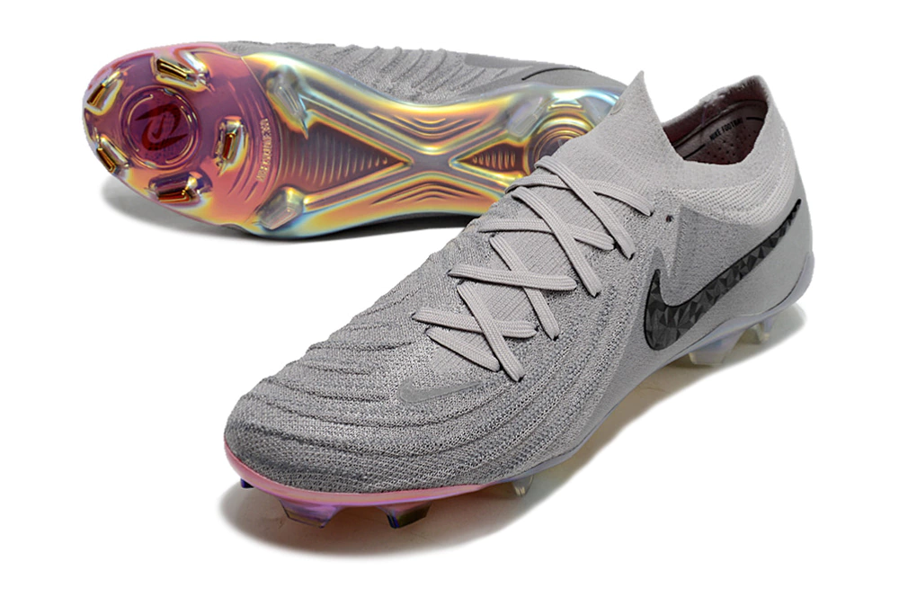
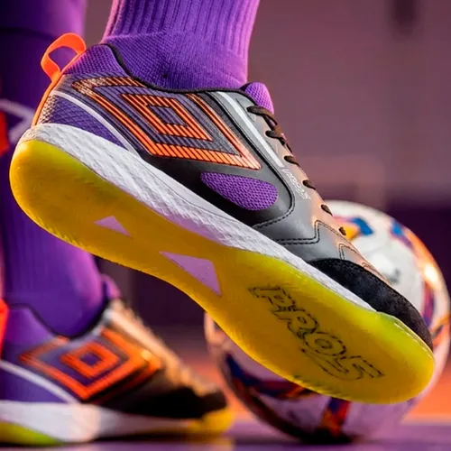
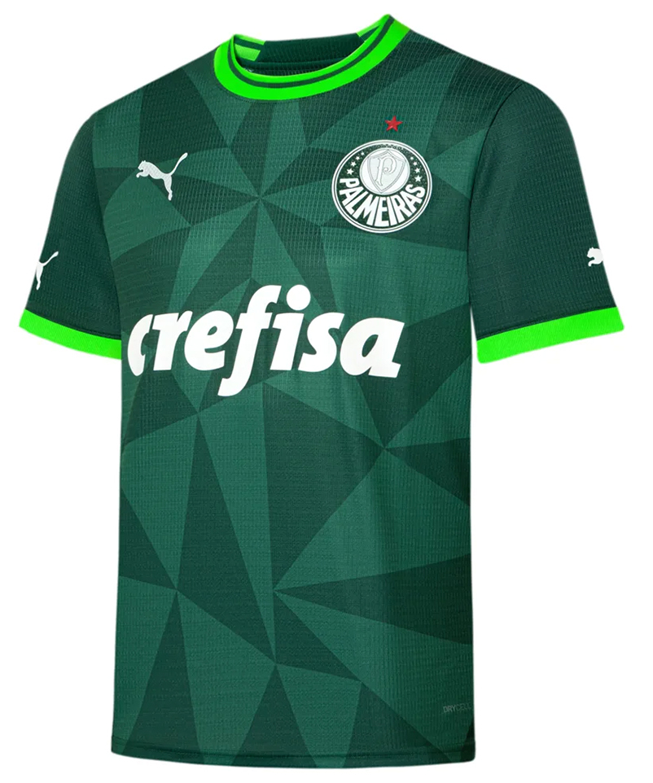
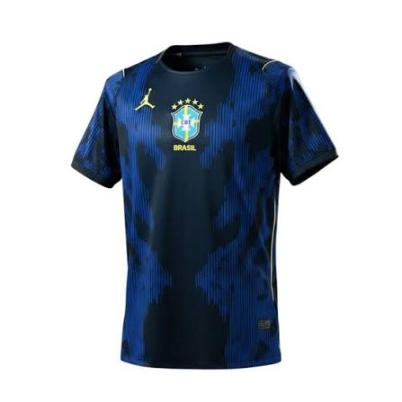
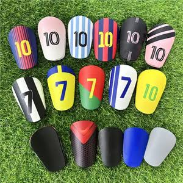
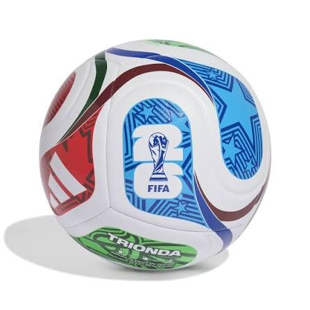
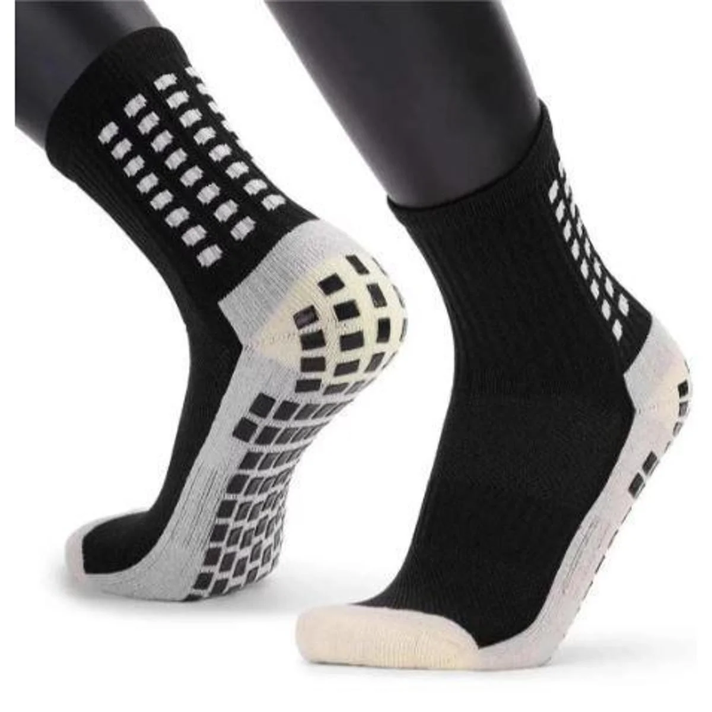

Arena do Craque
A Arena do Craque é o templo definitivo para quem vive e respira futebol. Com um visual moderno e a energia contagiante de um dia de clássico, a loja reúne as últimas coleções de chuteiras das principais marcas do mercado, oferecendo modelos específicos para grama natural, campo society e futsal.
Além dos calçados de alta performance, o espaço conta com uma linha completa de acessórios essenciais: caneleiras anatômicas, luvas de goleiro profissionais, bolas oficiais, meias de compressão e mochilas esportivas. Seja para o futebol de fim de semana ou para o treino da base, cada detalhe foi pensado para elevar o seu jogo.
Chuteiras
Na Arena do Craque, a performance em campo e nas quadras começa pelos pés, unindo tecnologia de tração, conforto extremo e durabilidade.
Chuteiras de Campo
Solado multidirecional: Travas posicionadas estrategicamente para garantir explosão em arrancadas e estabilidade em giros rápidos no gramado.
Cabedal texturizado: Toque de bola refinado e controle absoluto em passes e finalizações sob qualquer condição climática.
Ajuste anatômico: Estrutura que abraça o pé, oferecendo firmeza ao tornozelo e suporte durante os 90 minutos.
Chuteiras de Futsal
Solado Non-Marking: Borracha de alta aderência desenvolvida para quadras de taco ou cimento, sem deixar marcas no piso.
Biqueira reforçada: Costura e proteção extras para suportar chutes de bico e o desgaste do atrito diário.
Entressola em EVA responsivo: Absorção de impacto otimizada para proteger as articulações em superfícies rígidas.
Diferenciais Arena do Craque
Variedade de estilos: Modelos que vão do visual clássico às opções com colarinho elástico (sock-like) para maior fixação.
Materiais de alta performance: Sintéticos leves e respiráveis que mantêm o pé firme sem pesar nas jogadas.




Acessórios Futebolísticos
Os acessórios da Arena do Craque entregam a proteção, a precisão e o estilo que faltavam para completar o seu uniforme e elevar o nível da sua partida.
Caneleiras de Alta Proteção
Anatômicas e leves: Design curvado que se ajusta perfeitamente à canela, garantindo proteção sem limitar os movimentos.
Placa de alto impacto: Casco rígido externo com revestimento interno em EVA, absorvendo a força das divididas.
Meias Antiderrapantes
Tecnologia Grip: Placas de silicone na sola que travam a meia dentro da chuteira, eliminando o deslizamento do pé.
Prevenção de bolhas: Ajuste firme com compressão no arco do pé, reduzindo o atrito e melhorando a estabilidade nos giros rápidos.
Camisas de Futebol
Tecido respirável: Microfibra de poliéster com secagem rápida, mantendo o corpo seco e leve durante toda a partida.
Corte esportivo: Modelagem pensada para total liberdade de movimento em arrancadas, passes e finalizações.
Bolas de Alta Performance
Trajetória precisa: Estrutura com painéis reforçados para menor absorção de água e voo estável em chutes e cruzamentos.
Toque macio: Câmara interna de alta retenção de ar que garante o quique ideal e durabilidade em diferentes superfícies.





Contato
Preencha os campos abaixo para entrar em contato.